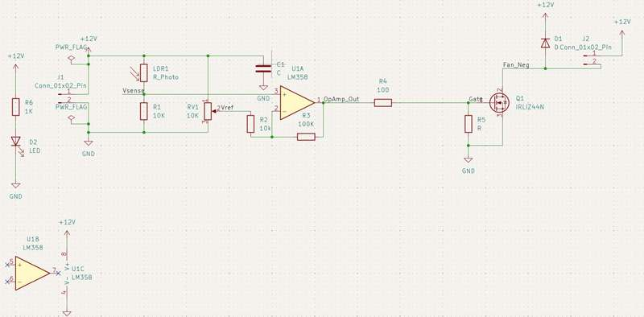
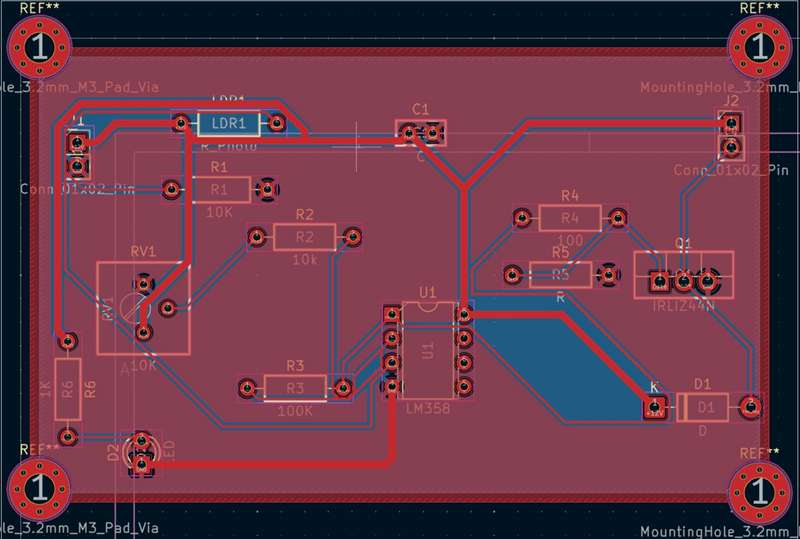
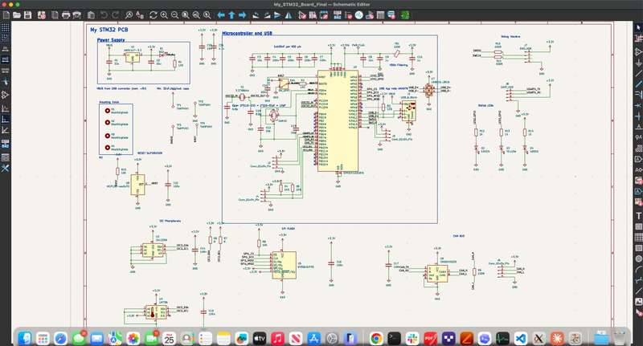

Professional electrical design engineer specializing in schematic capture, PCB layout, and SPICE circuit simulation. From concept to production-ready boards.
I am a professional electrical and electronic-aided design (EAD) engineer with deep expertise in KiCad, NGSpice, and the broader open-source EDA ecosystem. My work spans the full hardware design lifecycle: schematic capture, simulation verification, multi-layer PCB layout, and design-for-manufacturing review.
I specialize in power electronics, analog circuit design, and mixed-signal systems. Every project I deliver is backed by thorough SPICE simulation, ensuring designs perform reliably before they reach fabrication.
Full proficiency in schematic capture (Eeschema), PCB layout (Pcbnew), footprint editing, DRC/ERC, Gerber generation, and BOM management.
Transient, AC, DC sweep, and parametric analysis. MOSFET characterization, op-amp stability, power supply ripple analysis, and Monte Carlo tolerance studies.
Schematic capture, multi-layer PCB layout, design rule management, and integrated library handling in Altium's professional EDA environment.
Buck/boost/SEPIC converters, linear regulators, gate drivers, thermal management, and EMC-conscious layout for switch-mode power supplies.
Op-amp circuits, sensor interfaces, ADC/DAC signal conditioning, filter design, and precision voltage references.
Multi-layer stack-up planning, controlled impedance routing, copper pours, thermal relief, and design-for-manufacturing review.
Complete design packages: schematics, BOMs, assembly drawings, test procedures, and design review presentations.
Linear voltage regulator with full-wave bridge rectifier
A complete mains-to-12VDC regulated power supply featuring a full-wave bridge rectifier, capacitor filter bank, and a linear regulator stage. The design was simulated end-to-end in NGSpice to verify output ripple, load regulation, and transient response under varying load conditions.
Switch-mode step-down converter with PWM control
A high-efficiency DC-DC buck converter designed for 24V-to-5V step-down conversion. The switching topology was simulated in NGSpice with realistic MOSFET models, verifying output ripple, inductor current waveforms, and efficiency across load. PCB layout follows best practices for switch-mode power supply routing with short, wide power traces and proper ground plane management.
LDR sensor + LM358 op-amp + IRLIZ44N MOSFET driver
An ambient-light-activated fan controller circuit. A light-dependent resistor (LDR) forms a voltage divider with R1 (10K), feeding a comparator built around the LM358 op-amp. The reference voltage is set by a 10K potentiometer (RV1). When light exceeds the threshold, the op-amp output drives an IRLIZ44N N-channel MOSFET via a gate resistor network (R4/R5), switching the fan load connected through J2. A feedback resistor (R3, 100K) provides hysteresis to prevent oscillation near the threshold. The PCB is a 2-layer board with proper ground plane management and M3 mounting holes.
| Ref | Component | Value | Function |
|---|---|---|---|
| LDR1 | Photoresistor | R_Photo | Light sensing element |
| U1A | LM358 | — | Comparator / driver |
| Q1 | IRLIZ44N | — | N-ch MOSFET load switch |
| R1 | Resistor | 10K | LDR voltage divider |
| RV1 | Potentiometer | 10K | Threshold reference (2Vref) |
| R2 | Resistor | 10K | Reference divider |
| R3 | Resistor | 100K | Hysteresis feedback |
| R4 | Resistor | 100 | Gate current limit |
| R5 | Resistor | R | Gate pull-down |
| C1 | Capacitor | C | Decoupling / filter |
| D1 | Diode | D | Flyback protection |
| D2 | LED | — | Power indicator |


Full multi-sheet microcontroller PCB with power, USB, and peripheral subsystems
A complete custom STM32 development board designed from scratch in KiCad. The schematic is organized into clearly defined functional blocks: a regulated power supply section with multiple voltage rails, an STM32 microcontroller core with full pin-mapping, USB connectivity for programming and communication, I2C and SPI peripheral interfaces, analog signal conditioning, and LED/DAC outputs. The design demonstrates professional-grade hierarchical schematic organization, proper decoupling strategy, and crystal oscillator layout for reliable MCU operation.
| Subsystem | Key Components | Function |
|---|---|---|
| Power Supply | Voltage regulators, filter caps | Multi-rail power generation & regulation |
| MCU Core | STM32, crystal oscillator, decoupling | Main processing & GPIO control |
| USB Interface | USB connector, ESD protection | Programming & serial communication |
| I2C Peripherals | Pull-ups, connectors | Sensor & display interfaces |
| SPI / DAC | DAC IC, SPI bus | Analog output generation |
| Analog Section | Op-amps, filtering | Signal conditioning & ADC input |

Sebastine redesigned our 48V-to-5V buck converter after our previous vendor's board kept overheating under load. He ran full thermal and transient simulations in NGSpice before we committed to a new fab run — the revised layout dropped junction temps by 22°C and we passed all our reliability testing on the first go. The KiCad source files and documentation he handed over were thorough enough for our in-house team to iterate on confidently.
We contracted Sebastine for schematic capture and PCB layout on a mixed-signal sensor interface board — 4-layer stackup with tight analog/digital separation requirements. He nailed the controlled-impedance routing and delivered Gerbers that our CM accepted without a single DFM revision request. Communication throughout was clear and on schedule. Would hire again without hesitation.
I needed a quick-turn prototype for an STM32-based motor controller with USB and CAN interfaces. Sebastine delivered the full multi-sheet KiCad schematic and 4-layer layout in under two weeks, including a complete BOM and assembly drawing. The board powered up and programmed via ST-Link on the first attempt — no bodge wires needed. His attention to decoupling and power plane integrity really shows.
Whether you need a full PCB design, simulation verification, or design review — I'm here to help bring your hardware vision to life.